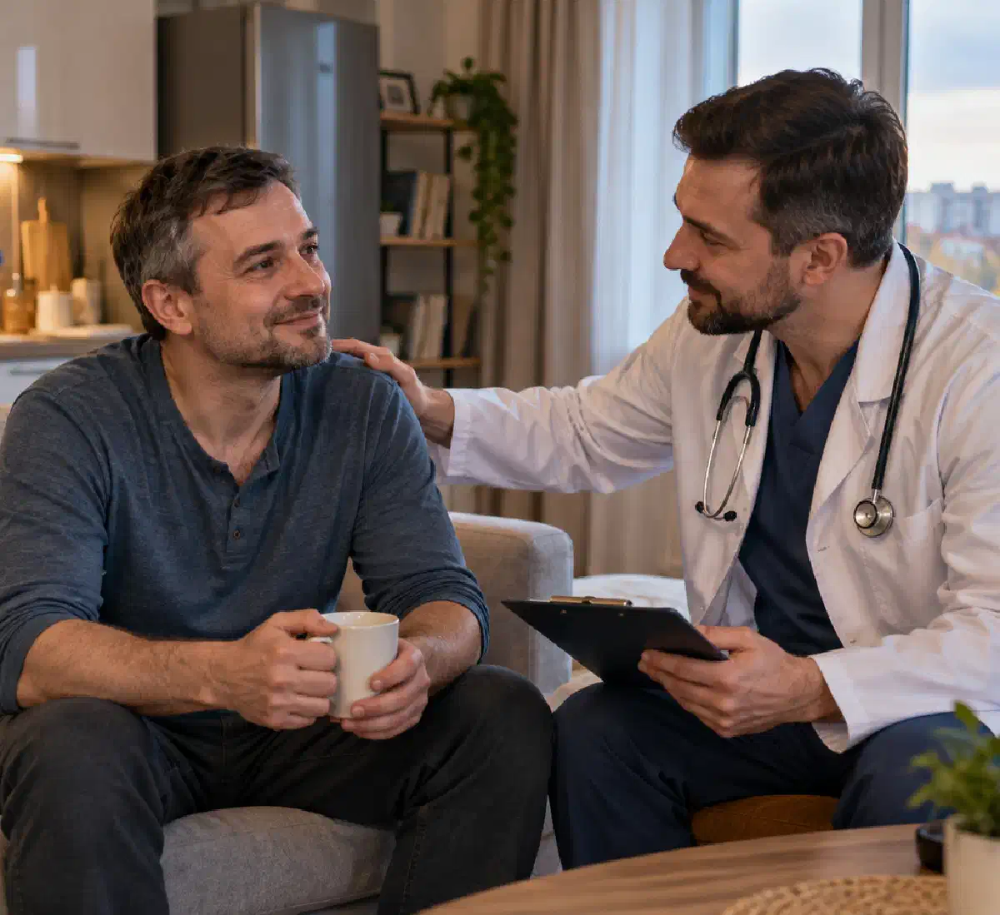
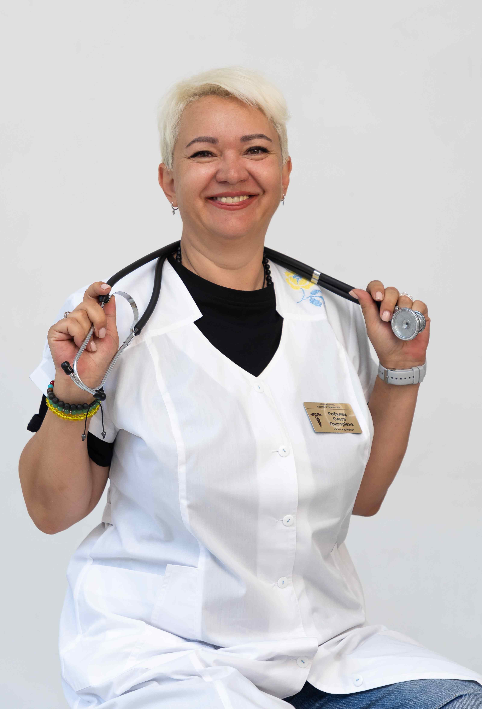

+38(068)
79 72 782
+38(068)
79 72 782Как мне помогли выйти из запоя в Харькове
Личный опыт пациента


Бесплатная консультация, работаем круглосуточно 24/7
Личный опыт пациента

Дата написания: 14 окт. 2026 г.
Последнее обновление: 14 окт. 2026 г.
Вывод из запоя в Харькове стал для меня первым серьёзным шагом к восстановлению после продолжительного употребления алкоголя. Раньше я считал, что способен самостоятельно контролировать ситуацию и в любой момент прекратить пить. Однако очередной запой показал, насколько опасной может быть алкогольная зависимость и почему медицинская помощь иногда необходима даже тем, кто долго отказывается признавать проблему. Я столкнулся с выраженной слабостью, тремором рук, бессонницей, тревогой и учащённым сердцебиением. Попытки самостоятельно справиться с симптомами не приносили облегчения. В итоге я решил обратиться за профессиональной помощью. В этой истории я расскажу, почему принял такое решение, как может проходить вызов нарколога на дом в Харькове, чего ожидать от медицинского осмотра и почему устранение острых симптомов не означает полного избавления от алкогольной зависимости.
Всё начиналось достаточно привычно. После напряжённой рабочей недели я решил расслабиться и выпить немного алкоголя. Сначала это казалось обычным отдыхом, который никак не повлияет на мои повседневные обязанности. Однако на следующий день самочувствие оказалось настолько плохим, что возникло желание снова употребить спиртное, чтобы временно уменьшить неприятные ощущения. Постепенно употребление стало повторяться каждый день. Я перестал нормально питаться, практически не выходил из дома, нарушился режим сна. Каждое утро начиналось с головной боли, слабости и внутреннего напряжения. Мне казалось, что ещё немного — и я самостоятельно остановлюсь, но ситуация только ухудшалась. Спустя несколько дней я понял, что уже не контролирую происходящее. Алкоголь перестал приносить удовольствие и использовался преимущественно для временного облегчения плохого самочувствия. Именно тогда появились первые мысли о необходимости обратиться к врачу за помощью при запое.
Самым тревожным моментом стало ухудшение состояния при попытке отказаться от алкоголя. Я проснулся с выраженной дрожью в руках, сильной потливостью и ощущением тревоги. Сердце билось быстрее обычного, а привычные действия требовали значительных усилий. До этого я был уверен, что достаточно просто перестать пить, хорошо выспаться и подождать несколько дней. Но симптомы не уменьшались, и я начал опасаться возможных осложнений. Позднее я узнал, что после продолжительного регулярного употребления спиртного резкое прекращение может сопровождаться алкогольным абстинентным синдромом. В тяжёлых случаях такое состояние способно привести к судорогам, нарушениям сознания и алкогольному делирию. Я понял, что дальнейшие самостоятельные эксперименты могут оказаться опасными. Поэтому вместо очередной попытки справиться с проблемой без помощи специалистов решил получить медицинскую консультацию.
После нескольких дней употребления спиртного моё физическое состояние заметно ухудшилось. Особенно беспокоили дрожание рук, слабость, повышенная потливость, тошнота и отсутствие аппетита. Иногда появлялось ощущение нехватки воздуха, хотя определить причину самостоятельно я не мог. Ночью практически не удавалось нормально спать. Я часто просыпался, испытывал тревогу и не мог расслабиться. Утром симптомы становились особенно неприятными. Дополнительно появились раздражительность, сложности с концентрацией внимания и чувство постоянного внутреннего напряжения. Я начал замечать, что мне трудно заниматься даже простыми бытовыми делами. Именно сочетание физических и психологических симптомов заставило меня серьёзно задуматься о медицинской помощи. Теперь я понимаю, что подобные проявления требуют оценки специалиста, поскольку могут быть связаны не только с похмельем, но и с алкогольной абстиненцией.
Долгое время главным препятствием был страх. Мне казалось, что обращение к наркологу обязательно приведёт к осуждению, разглашению информации и проблемам на работе. Кроме того, я не представлял, как проходит лечение. Возникали вопросы: обязательно ли ложиться в стационар, какие процедуры назначают, будет ли больно и сколько времени потребуется на восстановление. Ещё одним психологическим барьером было нежелание признавать зависимость. Я убеждал себя, что происходящее временно и достаточно проявить силу воли. Однако ухудшение самочувствия постепенно изменило моё отношение. Я начал понимать, что обращение за медицинской помощью не является признанием личной несостоятельности. Это возможность оценить состояние здоровья, определить риски и получить лечение алкогольной зависимости, соответствующее медицинским показаниям.
Решение обратиться к врачу далось нелегко. Я долго откладывал звонок, надеясь, что самочувствие улучшится самостоятельно. Но после очередной бессонной ночи стало очевидно, что нужна профессиональная оценка состояния. Я начал искать информацию о возможности вывода из запоя на дому Харьков. Для меня было важно получить помощь без необходимости самостоятельно ехать через город в плохом физическом состоянии. При этом я понимал, что домашнее лечение подходит не каждому пациенту. При тяжёлой абстиненции, судорогах, галлюцинациях и других опасных симптомах требуется экстренная помощь и часто госпитализация. Когда я решился обратиться за консультацией, основное чувство было не столько страхом, сколько облегчением. Появилась возможность обсудить симптомы со специалистом и перестать действовать наугад.
Во время обращения за консультацией нарколога в Харькове я постарался максимально подробно описать своё состояние. Сообщил возраст, приблизительную продолжительность употребления алкоголя, время последнего приёма спиртного и симптомы, которые беспокоили сильнее всего. Меня спросили о хронических заболеваниях, принимаемых лекарствах, перенесённых судорожных приступах и предыдущих эпизодах алкогольной абстиненции. Раньше мне казалось, что подобные вопросы являются формальностью. Но позже я понял, насколько они важны для безопасного выбора тактики помощи. Особое внимание уделялось наличию признаков, требующих немедленной госпитализации. Мне объяснили, что окончательное решение о возможности лечения на дому принимается только после оценки состояния, а при опасных симптомах необходимо вызывать скорую помощь.
После согласования выезда я ожидал врача дома. Время прибытия зависит от района Харькова, транспортной обстановки, текущей нагрузки медицинской службы и условий безопасности. Когда специалист приехал по срочному вызову нарколога на дом, первым делом он уточнил жалобы и обстоятельства употребления алкоголя. Врач не приступал сразу к медицинским процедурам, а сначала провёл обследование и оценил возможные риски. Для меня было важно, что разговор проходил спокойно, без давления и обвинений. Я мог рассказать о своём состоянии и задать вопросы о дальнейшем лечении. Во время консультации специалист объяснил, какие симптомы могут быть связаны с алкогольной абстиненцией и в каких ситуациях домашняя помощь становится недостаточной. Именно после первичной оценки стало понятнее, какой подход необходим и почему не существует одной универсальной процедуры для всех пациентов после запоя.
Медицинский осмотр начался с измерения артериального давления, частоты сердечных сокращений и других основных показателей. Врач оценил уровень сознания, выраженность тремора, признаки обезвоживания и общее неврологическое состояние. Дополнительно специалист уточнил продолжительность употребления алкоголя, предыдущие попытки прекращения и наличие осложнений в прошлом. Мне объяснили, что при необходимости могут проводиться ЭКГ, лабораторные исследования и дополнительная диагностика. Они помогают выявить нарушения электролитного баланса, сопутствующие заболевания и осложнения, которые невозможно установить только по жалобам. По итогам осмотра врач определяет, возможно ли безопасное лечение в домашних условиях. При высоком риске тяжёлой абстиненции, судорог, делирия или нестабильных жизненных показателях необходима помощь в стационаре.
Во время консультации мне объяснили различие между обычным похмельем и алкогольным абстинентным синдромом. После многодневного употребления спиртного организм может адаптироваться к постоянному воздействию алкоголя, а прекращение употребления способно вызвать выраженные нарушения работы нервной системы. В моём случае тревожными проявлениями были тремор, потливость, бессонница и учащённое сердцебиение. Эти симптомы нельзя считать достаточными для самостоятельной постановки диагноза, но они являются основанием для медицинской оценки. Врач рассказал, что лечение алкогольной абстиненции направлено на предотвращение осложнений, контроль симптомов и поддержание жизненно важных функций. Мне стало понятно, что профессиональная помощь заключается не просто в устранении неприятных ощущений. Главная задача — обеспечить безопасность пациента и определить дальнейшую тактику восстановления.
До обращения за помощью я представлял вывод из запоя как обязательное внутривенное введение большого количества препаратов. Однако врач объяснил, что инфузионная терапия назначается только при наличии соответствующих показаний. Например, капельница от алкоголя на дому может рассматриваться при обезвоживании, повторной рвоте, невозможности восполнить жидкость через рот или отдельных нарушениях водно-электролитного баланса. В этой смоделированной истории после оценки состояния специалист определил необходимость внутривенного введения раствора для коррекции дефицита жидкости. Перед процедурой были учтены показатели артериального давления, состояние сердечно-сосудистой системы и возможные противопоказания. Во время инфузии врач наблюдал за самочувствием и контролировал основные показатели. Мне объяснили, что капельница не является универсальным средством лечения алкогольной зависимости и не заменяет специфическую терапию абстиненции. При тяжёлом состоянии необходима госпитализация.
Перед лечением мне объяснили, что набор лекарственных средств определяется индивидуально. Универсальной схемы медикаментозного вывода из запоя не существует, поскольку симптомы, сопутствующие заболевания и риск осложнений у пациентов различаются. При алкогольной абстиненции могут применяться препараты для контроля симптомов и профилактики осложнений. В определённых случаях назначают тиамин, проводят коррекцию дефицита жидкости и электролитов, а при необходимости используют средства для лечения синдрома отмены под медицинским наблюдением. Я понял, что самостоятельно принимать сильнодействующие успокаивающие или снотворные препараты опасно, особенно при наличии алкоголя в организме. В этой истории конкретные названия и дозировки лекарств не приводятся, поскольку без реальной медицинской документации было бы неправильно приписывать пациенту определённую схему лечения. Подбор препаратов всегда должен осуществляться специалистом.
Во время процедуры я находился под наблюдением врача. Основным ощущением было постепенное уменьшение напряжения, связанное в том числе с пониманием, что состояние контролирует медицинский специалист. При этом мне объяснили, что улучшение самочувствия не обязательно наступает сразу после инфузии. Продолжительность восстановления зависит от тяжести состояния, сопутствующих заболеваний и наличия алкогольной абстиненции. После завершения процедуры врач повторно оценил основные показатели и рассказал, на какие симптомы необходимо обращать внимание. Я понял, что устранение обезвоживания и уменьшение отдельных жалоб не означают полного завершения лечения. Некоторые осложнения алкогольной отмены могут развиваться позже, поэтому крайне важно соблюдать рекомендации и обращаться за помощью при ухудшении состояния.
В первые часы после медицинской помощи я особенно внимательно прислушивался к своему организму. В этой примерной истории состояние постепенно стабилизировалось: уменьшилась выраженность слабости, стало легче пить жидкость и отдыхать. Однако тревожность и нарушения сна не исчезли мгновенно. Врач заранее предупредил, что восстановление после длительного употребления алкоголя может занимать больше времени, чем одна медицинская процедура. Мне рекомендовали контролировать самочувствие, избегать физических перегрузок и не употреблять спиртное для облегчения остаточных симптомов. Важно учитывать, что подобное улучшение не гарантировано каждому пациенту. При выраженной абстиненции состояние может ухудшаться даже после первоначальной стабилизации, поэтому необходимы наблюдение и своевременная повторная оценка врача.
Больше всего я опасался наступления ночи. Во время запоя именно ночью усиливались тревога, беспокойство и проблемы со сном. После оказания помощи мне объяснили, какие изменения самочувствия допустимы в процессе восстановления, а какие требуют немедленного обращения за медицинской помощью. В этой истории первая ночь прошла спокойнее предыдущих, хотя сон оставался прерывистым. Я не пытался самостоятельно принимать снотворные средства и следовал рекомендациям специалиста. Мне также объяснили, что нарушения сна после прекращения употребления алкоголя могут сохраняться некоторое время. Однако выраженное возбуждение, галлюцинации, спутанность сознания или судороги не являются обычными проявлениями восстановления и требуют экстренной помощи.
На второй день я начал замечать постепенное возвращение аппетита и уменьшение общей слабости. Стало проще выполнять повседневные действия, хотя сохранялась утомляемость. На третий день в этой смоделированной ситуации общее самочувствие продолжило улучшаться. Но я уже понимал, что первые несколько суток после прекращения употребления алкоголя требуют особого внимания, поскольку именно в этот период могут возникать некоторые опасные осложнения абстиненции. Поэтому мне рекомендовали не прекращать назначенное наблюдение только потому, что появились первые признаки улучшения. Я также осознал, что физическое восстановление после запоя — лишь начальный этап. Без дальнейшей работы с алкогольной зависимостью риск повторного употребления сохраняется.
После первичного лечения врач объяснил, что необходимо для дальнейшего восстановления. Рекомендации зависели от моего состояния и включали контроль симптомов, соблюдение назначенной схемы лечения, достаточный отдых и питание. Особое внимание уделялось отказу от самостоятельного приёма алкоголя, седативных препаратов и других средств, которые могут скрывать опасные симптомы или вызывать нежелательные взаимодействия. Мне также рассказали о важности дальнейшей диагностики и лечения зависимости. При необходимости могут использоваться медикаментозные методы, психотерапевтическая помощь и программы реабилитации. Врач подчеркнул, что снижение выраженности абстинентных симптомов не устраняет автоматически тягу к алкоголю и психологические причины употребления. Именно после этого разговора я начал воспринимать лечение не как разовую процедуру, а как последовательный процесс восстановления.
До обращения к врачу меня беспокоил вопрос конфиденциальности. Я опасался, что информация о проблемах с алкоголем станет известна коллегам, знакомым или другим людям. Во время консультации я смог обсудить порядок обработки медицинских данных и условия предоставления помощи. Мне объяснили, что медицинская информация относится к конфиденциальной и должна защищаться в соответствии с законодательством. При этом важно понимать, что конфиденциальность не означает отсутствие медицинской документации или возможность обходить установленные законом обязанности медицинского учреждения. Для меня было достаточно знать, что сведения о состоянии здоровья не должны разглашаться посторонним без законных оснований. Такой подход помог почувствовать себя спокойнее и сосредоточиться на лечении, а не на страхе возможного осуждения.
Перед обращением за помощью меня интересовала стоимость медицинских услуг. Я хотел заранее понимать, какие расходы могут возникнуть и что входит в лечение. При сравнении предложений по стоимости вывода из запоя на дому важно учитывать, что цена зависит от состояния пациента, объёма обследования, необходимых лекарственных препаратов, продолжительности наблюдения и дополнительных процедур. Например, для UmbrellaPlus в информации об услугах может указываться стартовая стоимость вывода из запоя в Харькове от 2199 грн, если этот тариф актуален на момент обращения. При этом указанная сумма не должна восприниматься как гарантированная окончательная стоимость лечения в любой ситуации. Мне стало понятно, что перед процедурой необходимо уточнять цену, перечень включённых услуг и возможные дополнительные расходы. При наличии осложнений стоимость и место лечения могут существенно отличаться.
Оглядываясь назад, я понимаю, что допустил несколько серьёзных ошибок. Прежде всего слишком долго игнорировал ухудшение самочувствия и надеялся, что организм восстановится без медицинской помощи. Вторая ошибка заключалась в попытках облегчить симптомы очередной дозой алкоголя. Это давало временное субъективное облегчение, но не решало проблему зависимости и способствовало продолжению употребления. Кроме того, я недооценивал опасность бессонницы, тремора, потливости и выраженного сердцебиения. Раньше считал их обычным похмельем. Теперь понимаю, что при сформировавшейся физической зависимости прекращение алкоголя без медицинской оценки может быть опасным, особенно если раньше возникали судороги или тяжёлые эпизоды отмены. Самым полезным решением стало обращение к специалисту, который смог оценить риски и объяснить дальнейшие действия.
Главным изменением стало отношение к проблеме. Раньше я воспринимал запой как временный эпизод, после которого достаточно восстановить физические силы и вернуться к привычной жизни. После консультации я понял, что повторяющееся неконтролируемое употребление алкоголя требует более серьёзного внимания. Мне рассказали, что лечение алкоголизма в Харькове может включать медицинскую диагностику, психотерапевтическую поддержку, препараты для снижения риска повторного употребления по показаниям и длительное наблюдение. В этой истории я решил не ограничиваться устранением острых симптомов и рассмотреть дальнейшую программу восстановления. При этом один удачный эпизод лечения не означает гарантированного избавления от зависимости. Для устойчивых изменений необходима последовательная работа, а иногда и повторная профессиональная помощь.
Если бы мне пришлось описать главное впечатление от обращения к наркологу, я отметил бы спокойное отношение, понятные объяснения и внимание к безопасности. До консультации я опасался, что лечение сведётся к одной процедуре, после которой придётся самостоятельно решать все остальные проблемы. Вместо этого в данной примерной истории врач объяснил возможные причины симптомов, оценил риски, рассказал об ограничениях домашней помощи и предложил дальнейшие шаги. Особенно важным оказалось понимание того, что после запоя необходимо заниматься не только физическим самочувствием, но и самой алкогольной зависимостью. Такой подход позволил воспринимать обращение за медицинской помощью как начало восстановления, а не просто способ временно почувствовать себя лучше.
Прежде всего я бы посоветовал не откладывать обращение за медицинской помощью при выраженном ухудшении самочувствия после употребления алкоголя. Страх осуждения, финансовые вопросы и нежелание признавать проблему могут мешать человеку своевременно получить консультацию. Однако выраженный тремор, потливость, тахикардия, бессонница и тревога после прекращения длительного употребления спиртного могут быть признаками абстиненции. Не стоит самостоятельно назначать успокаивающие препараты, использовать алкоголь для временного облегчения симптомов или рассчитывать, что опасные проявления обязательно исчезнут без лечения. При судорогах, галлюцинациях, спутанности сознания, нарушении дыхания или других угрожающих симптомах необходимо немедленно обращаться за экстренной медицинской помощью по номеру 103 или 112.
Мой опыт заставил по-другому взглянуть на алкогольную зависимость. Раньше мне казалось, что главная задача — пережить несколько тяжёлых дней после запоя. Теперь я понимаю, что восстановление требует значительно большего внимания. Профессиональная медицинская помощь позволяет оценить состояние пациента, выявить опасные осложнения и определить, какие методы лечения действительно необходимы. В некоторых ситуациях возможно амбулаторное наблюдение или помощь на дому, в других — требуется госпитализация и интенсивное медицинское наблюдение. Для меня самым важным стало понимание, что обращение к врачу не должно откладываться до появления критических симптомов. Выведение из запоя может стать начальным этапом дальнейшего лечения алкогольной зависимости, но не заменяет полноценную программу восстановления. Именно последовательное лечение, поддержка специалистов и работа над причинами употребления создают условия для устойчивых положительных изменений.

Статья проверена экспертом
Робулец Ольга
Врач нарколог, ординатор
Возможно интересная статья:
Выход из запоя уменьшением дозы алкоголя («лесенкой»)
Да. Вызов нарколога на дом проводится полностью конфиденциально. Для военнослужащих ЗСУ помощь предоставляется с соблюдением повышенных требований к анонимности и конфиденциальности, без постановки на наркологический учёт. Перед началом оказания помощи врач уточняет жалобы, длительность употребления алкоголя, наличие хронических заболеваний и принимаемые препараты.
Да, при выраженной алкогольной интоксикации капельница может быть не только допустима, но и необходима. Ждать, пока человек полностью протрезвеет, требуется не всегда. Врач оценивает уровень сознания, дыхание, давление, пульс, степень обезвоживания и общее состояние пациента, после чего решает, можно ли проводить инфузионную терапию на дому. Капельница помогает восполнить жидкость и электролиты, уменьшить проявления интоксикации и поддержать организм в период выведения алкоголя. При этом состав препаратов подбирается только врачом, поскольку некоторые лекарства на фоне алкоголя могут быть опасны.
Во многих случаях вывод из запоя можно провести на дому, если состояние пациента остаётся относительно стабильным и отсутствуют признаки тяжёлых осложнений. Перед началом лечения врач оценивает артериальное давление, пульс, частоту и характер дыхания, уровень сознания и выраженность абстинентного синдрома. Всем пациентам проводится ЭКГ для оценки работы сердца и выявления возможных нарушений ритма или других изменений со стороны сердечно-сосудистой системы. При тяжёлом состоянии, выраженной абстиненции, нарушении сознания, судорогах или других опасных симптомах может потребоваться госпитализация в стационар.
Как правило, по городу врач приезжает в течение 20–60 минут. Время выезда по области рассчитывается индивидуально и зависит от удалённости населённого пункта. При обращении диспетчер уточняет точный адрес, состояние пациента и основные симптомы, после чего сообщает ориентировочное время прибытия.
Продолжительность инфузионной терапии зависит от состояния пациента, состава капельницы и объёма вводимых растворов. В среднем капельница длится от 1 до 3 часов. Точное время процедуры врач определяет после осмотра пациента с учётом выраженности интоксикации, общего состояния и реакции организма на лечение.
Состав капельницы подбирается индивидуально после осмотра пациента. В инфузионную терапию входят детоксикационные растворы, глюкоза, витамины, а также препараты для поддержки работы печени и сердечно-сосудистой системы. По показаниям врач может использовать успокаивающие и расслабляющие средства для уменьшения тревоги, тремора, внутреннего напряжения и других проявлений абстинентного синдрома. После завершения процедуры врач оценивает состояние пациента и при необходимости оставляет препараты в таблетках на ближайшие два дня с подробной схемой самостоятельного приёма для продолжения восстановления.
У пациентов улучшение самочувствия начинается уже во время процедуры или в первые часы после неё. Может уменьшаться тошнота, слабость, головная боль, сердцебиение, тревожность, внутреннее напряжение и тремор. Также лечение может способствовать нормализации сна и облегчению засыпания после запоя. Скорость восстановления зависит от длительности употребления алкоголя, общего состояния организма и выраженности алкогольного абстинентного синдрома.
Инфузионная терапия и назначенное врачом таблетированное лечение хорошо помогают уменьшить тревогу, внутреннее напряжение, тремор и нарушения сна, которые часто возникают после длительного употребления алкоголя. У многих пациентов после стабилизации состояния снижается тревожность, становится легче заснуть и постепенно восстанавливается нормальный сон.
После длительного регулярного употребления резкое прекращение алкоголя может сопровождаться выраженным абстинентным синдромом. Возможны сильный тремор, тахикардия, повышение давления, тревога, бессонница, судороги, галлюцинации и алкогольный делирий. Поэтому при длительном запое безопаснее проходить прекращение употребления под медицинским наблюдением.
Стационарное лечение может потребоваться при тяжёлом абстинентном синдроме, судорогах, галлюцинациях, выраженной спутанности сознания, подозрении на алкогольный делирий, нарушении дыхания, потере сознания, тяжёлых сопутствующих заболеваниях или невозможности безопасно контролировать состояние пациента дома. При таких симптомах необходима срочная наркологическая помощь.
Номер телефона:
+380 (68) 797 27 82
+380 (50) 021 69 57
Адрес наркологического центра вашего города уточняйте по
телефону
Работаем в: Киеве, Одессе, Львове, Харькове, Днепре,
Запорожье, Черкассах, Чугуеве, Черноморске, Каменском
Telegram: t.me/umbrellaplus
График работы: Круглосуточно